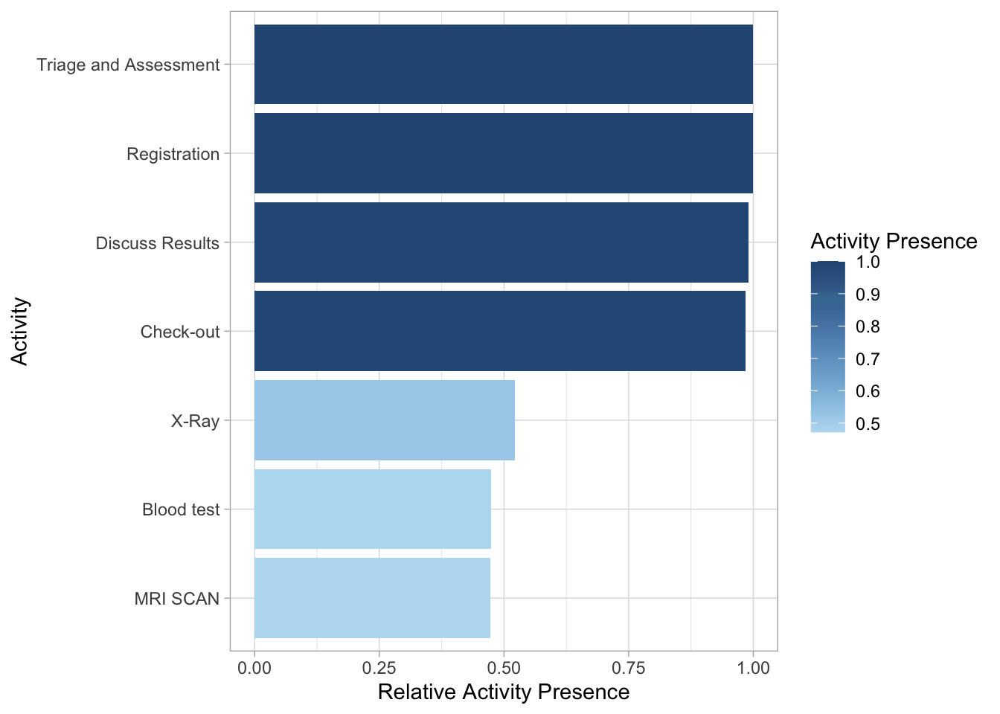
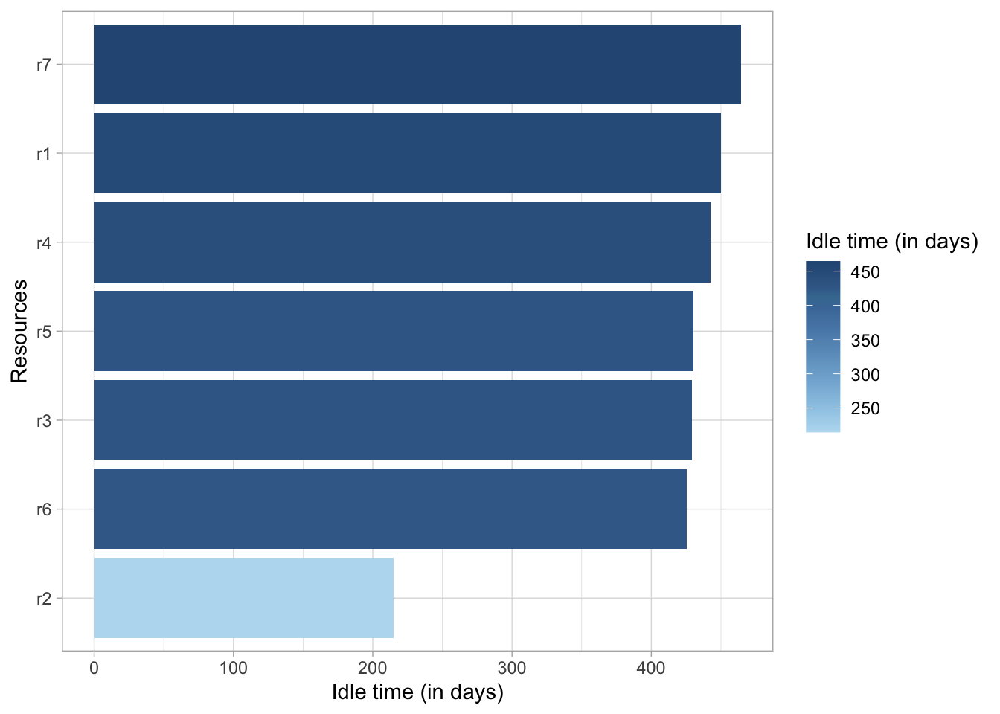
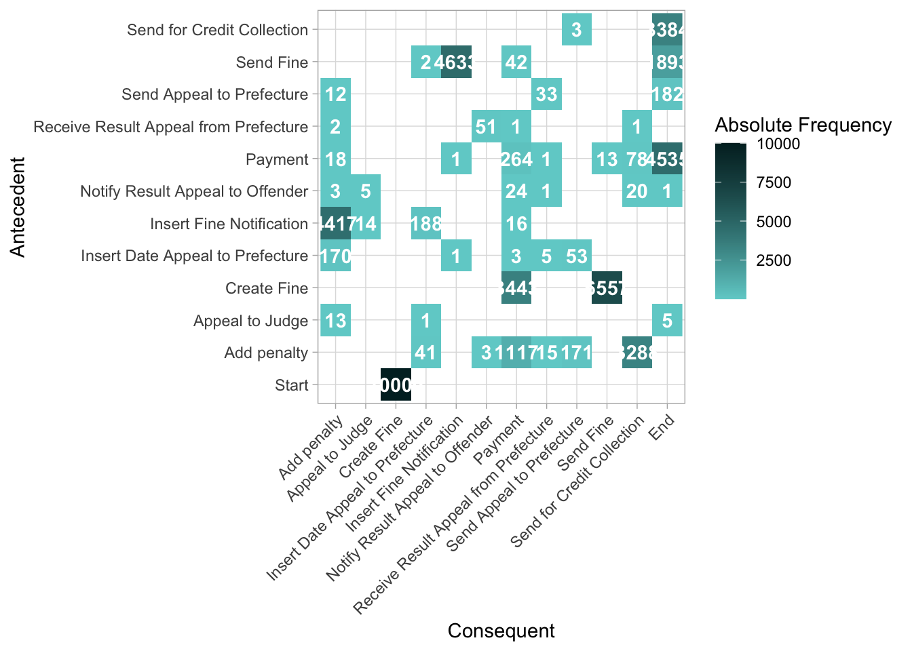

Chapter 4 流程分析
4.1 控制流
4.1.1 计算活动的出现频率
##
## .______ __ __ .______ ___ ____ ____ _______ .______ _______. _______
## | _ \ | | | | | _ \ / \ \ \ / / | ____|| _ \ / || ____|
## | |_) | | | | | | |_) | / ^ \ \ \/ / | |__ | |_) | | (----`| |__
## | _ < | | | | | ___/ / /_\ \ \ / | __| | / \ \ | __|
## | |_) | | `--' | | | / _____ \ \ / | |____ | |\ \----.----) | | |____
## |______/ \______/ | _| /__/ \__\ \__/ |_______|| _| `._____|_______/ |_______|
##
## ── Attaching packages ─────────────────────────────────────── bupaverse 0.1.0 ──
## ✔ bupaR 0.5.3 ✔ processcheckR 0.1.4
## ✔ edeaR 0.9.1 ✔ processmapR 0.5.2
## ✔ eventdataR 0.3.1
## ── Conflicts ────────────────────────────────────────── bupaverse_conflicts() ──
## ✖ bupaR::filter() masks stats::filter()
## ✖ processmapR::frequency() masks stats::frequency()
## ✖ edeaR::setdiff() masks base::setdiff()
## ✖ bupaR::timestamp() masks utils::timestamp()
## ✖ processcheckR::xor() masks base::xor()## ── Attaching packages ─────────────────────────────────────── tidyverse 1.3.2 ──
## ✔ ggplot2 3.4.0 ✔ purrr 1.0.2
## ✔ tibble 3.2.1 ✔ dplyr 1.1.3
## ✔ tidyr 1.3.0 ✔ stringr 1.5.0
## ✔ readr 2.1.3 ✔ forcats 0.5.2
## ── Conflicts ────────────────────────────────────────── tidyverse_conflicts() ──
## ✖ dplyr::contains() masks tidyr::contains(), processcheckR::contains()
## ✖ dplyr::filter() masks bupaR::filter(), stats::filter()
## ✖ dplyr::lag() masks stats::lag()
4.1.2 计算活动出现的次数
## # A tibble: 7 × 3
## handling absolute relative
## <fct> <int> <dbl>
## 1 Registration 500 0.184
## 2 Triage and Assessment 500 0.184
## 3 Discuss Results 495 0.182
## 4 Check-out 492 0.181
## 5 X-Ray 261 0.0959
## 6 Blood test 237 0.0871
## 7 MRI SCAN 236 0.08674.1.3 开始/结束活动
## # A tibble: 1 × 5
## employee handling absolute relative cum_sum
## <fct> <fct> <int> <dbl> <dbl>
## 1 r1 Registration 500 1 1## # A tibble: 5 × 5
## employee handling absolute relative cum_sum
## <fct> <fct> <int> <dbl> <dbl>
## 1 r7 Check-out 492 0.984 0.984
## 2 r6 Discuss Results 3 0.006 0.99
## 3 r2 Triage and Assessment 2 0.004 0.994
## 4 r5 X-Ray 2 0.004 0.998
## 5 r3 Blood test 1 0.002 14.3 性能表现
可以计算出三种不同的时间指标:
4.3.3 空闲时间
空闲时间: 没有活动实例处于活动状态的时间
空闲时间是指案例或资源中没有活动的时间。只有当活动实例同时具有开始和结束时间戳时才能计算。它可以在跟踪、资源、大小写和日志等级进行计算，并使用不同的时间单位。
## # A tibble: 7 × 2
## employee idle_time
## <fct> <drtn>
## 1 r7 464.4199 days
## 2 r1 450.2124 days
## 3 r4 442.6260 days
## 4 r5 430.1764 days
## 5 r3 429.1064 days
## 6 r6 425.5362 days
## 7 r2 214.7436 days
4.4 组织角度
4.4.1 资源频率
资源频率度量允许在日志、大小写、活动、资源和资源活动的级别上计算资源的数量/频率。
## # A tibble: 7 × 3
## employee absolute relative
## <fct> <int> <dbl>
## 1 r1 500 0.184
## 2 r2 500 0.184
## 3 r6 495 0.182
## 4 r7 492 0.181
## 5 r5 261 0.0959
## 6 r3 237 0.0871
## 7 r4 236 0.08674.4.2 资源参与
资源参与是指涉及资源的案例数量的概念。它可以在大小写、资源和资源活动的级别进行计算。
 这个例子表明所有情况下只有 r1和 r2参与，大多数情况下 r6和 r7参与，而其他的只参与了一半的情况，或多或少。